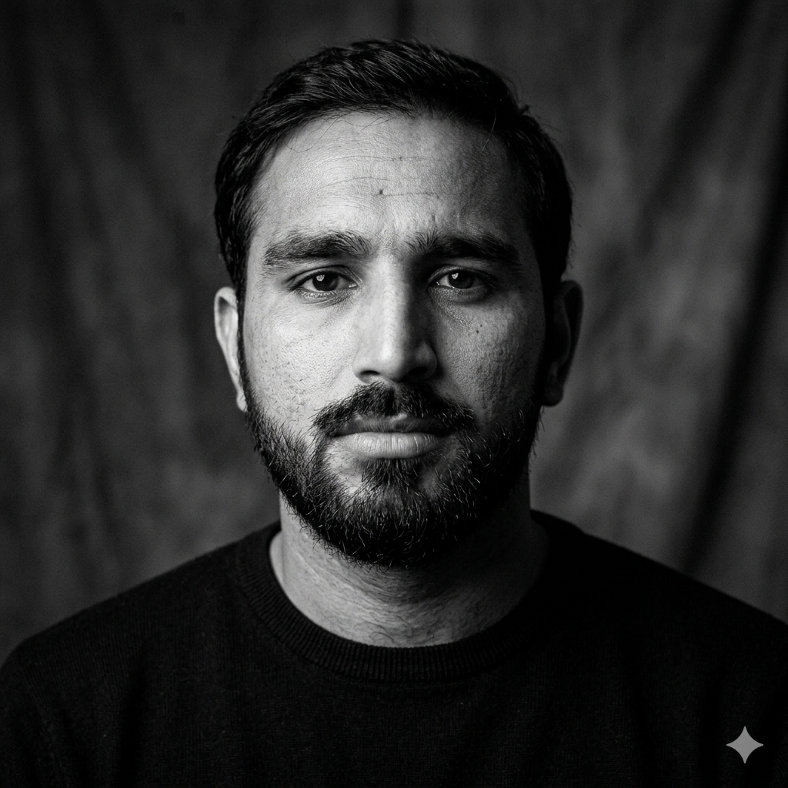

needs to run smarter.
Multi-tenant restaurant ecosystem spanning inventory, accounting, analytics, operations, and third-party integrations.
Senior full-stack engineer · Doha, Qatar
I’m Shoaib Ali, a product-focused engineer who takes ambitious web and mobile products from system design to production.

About me
My work sits where product thinking and practical engineering meet. I build resilient systems across frontend, backend, cloud infrastructure, and mobile.
See my experience ↓Selected work
Multi-tenant restaurant ecosystem spanning inventory, accounting, analytics, operations, and third-party integrations.
A public-facing product site rebuilt from the ground up for faster load times and stronger technical SEO.
A social platform for players to connect, manage profiles, coordinate activities, and build community.
Career path
Senior Full-Stack Engineer · Islamabad, Pakistan
Led architecture across a multi-tenant restaurant platform, building core inventory, accounting, analytics, and operations modules. Cut average API response time by 80% through database optimization, caching, indexing, and asynchronous processing.
Frontend Engineer · Remote
Led an end-to-end rebuild of the public site in Next.js with a focus on performance, SEO, responsive UI, and maintainability.
Full-Stack Developer · Rawalpindi, Pakistan
Delivered fintech, music commerce, and social products while mentoring junior engineers and establishing reusable frontend architecture practices.
Architecture lab
Explore the patterns I use to build production systems that remain observable, resilient, and ready to scale.
Technical toolkit
Node.js · NestJS · .NET · REST · GraphQL · Redis · SQS
Lambda · ECS · EC2 · S3 · RDS · CloudWatch · Cognito · Azure
Kafka · OpenTelemetry · Grafana · Redshift · Athena · RAG
React · Next.js · TypeScript · React Native · Redux · Tailwind